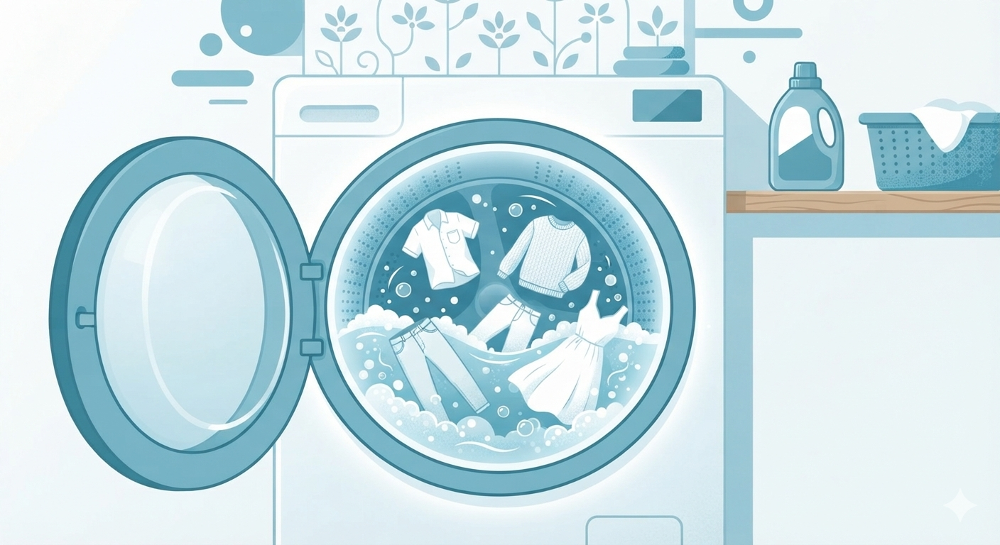
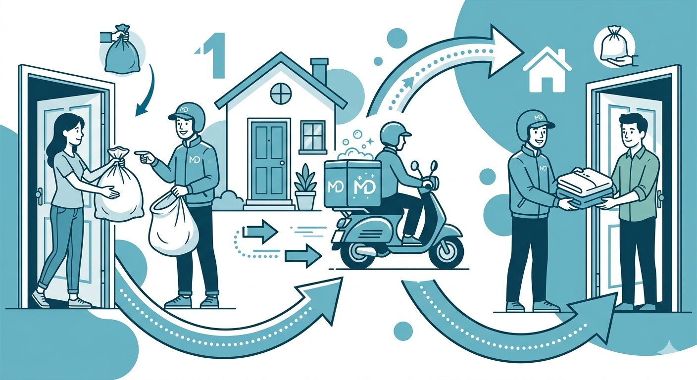

Your clothes work hard.
They deserve better than a rushed wash.
- Inconsistent cleaning, one week crisp, the next week dull.
- Stubborn stains treated with guesswork instead of chemistry.
- Delicate fabrics shrinking or pilling in the wrong cycle.
- Forgotten laundry, the wet load left overnight, again.
- Hours lost dropping off and collecting from the shop.

From hamper to hanger.
One bag at your door becomes a drawer of fresh clothes two days later. Here is the whole journey, handled for you.
-
Book
Choose your services, pick a time slot. Booking takes under a minute, no account needed for a demo run.
-
Pickup
A MeraDhobi rider collects your bag from your doorstep in the slot you chose. Everything is counted at the door.
-
Sort & Inspect
Every garment is inspected, tagged and grouped by fabric and colour before anything touches water.
-
Clean
Temperature, detergent and cycle length matched to each fabric, from sturdy cottons to fragile silks.
-
Quality Check
Fresh loads are steamed, pressed and inspected piece by piece against a finishing checklist.
-
Deliver
Your clothes return folded, protected and on time, usually within 48 hours of pickup.
Care for every fabric
you own, done properly.
Wash & Fold
Everyday clothes, fabric-appropriate cycles.
Everyday wear · TeesDry Cleaning
Solvent care for structured garments.
Suits · BlazersSteam Ironing
Crisp creases without shine or scorch.
Shirts · UniformsStain Treatment
Stain identified, then targeted pre-treatment.
Curry · Ink · CoffeeDelicate Care
Hand-wash programmes and mesh bags.
Silk · Lace · ChiffonExpress Laundry
In by morning, back by evening.
Same-day by 8 PMAnti-bacterial Rinse
A hygienic finish on every load.
Add-onFabric Softener
Softer hand-feel, gentle fragrance.
Add-onCustom Folding
Drawer-ready folds, your way.
Add-onDuvet & Blankets
Bulkier loads, handled with care.
BeddingHover to pause the ring. Full details on the services page.
Every fibre asks for different care.
We come to you.
Both ways.
No shop visits, no queues, no parking. A MeraDhobi rider collects your laundry bag from your door and brings it back the same way.
- Morning slots, 8 to 11 AM. Book before 9 AM for same-day express.
- Live route, planned daily. Riders follow optimized neighbourhood loops to stay on time.
- Neighbourhood coverage. Pick-up zones across the city; enter your pin code when you book.

Fabric-first cleaning
Programmes chosen per fabric, never one harsh cycle for everything.
Careful sorting
Tagged and grouped by fabric and colour before the first drop of water.
Professional finishing
Steamed, pressed and inspected piece by piece before it leaves.
Doorstep pickup
Your door is the counter. Pickup and delivery are always included.
Transparent pricing
Clear demo rates, published up front. No surprises at delivery.